Research
What we are trying to find out
One question drives the work: how much capability can a system learn and hold per unit of energy, memory and money, and how much of that can be done on a machine an ordinary person already owns? The threads below are the parts of that question we can currently measure.

Recursive meta-adaptive learning
Learning from use, in real time, where the way of learning also adapts and, in time, revises itself. An ambition: what the prototype does today, and where it stops.
Read
Efficiency, in joules
Counting operations and memory movement instead of parameters, and what that has changed in the code so far.
Read
Why Rust
Rust-first, not Rust-only: what the language buys for small systems, and what it does not change.
Read
How we judge results
WRONG versus refused, adversarial batteries, and a plain list of the mistakes we have made so far.
Read
Hardware
A rough description of the machine the experiments run on, how we measure, and what is planned next.
Read
Progress and roadmap
A dated timeline, what is next, and a list of what we do not know yet.
ReadThe working hypothesis, stated modestly
Today's large models descend from one design, the 2017 transformer, and the industry's progress since has mostly been scaling it and refining it. Hardware has had far more attention than the software that runs on it. The hypothesis is that some of the efficiency that remains is in software and representation rather than in new chips, and that low-end hardware may be underestimated because of it.
This is a working hypothesis, not a verified result. Some evidence points the same way (for example, the compute needed to reach a fixed image-classification accuracy fell 44× between 2012 and 2019, faster than hardware improvement alone would give), and some points the other way (transformers won partly because they map well onto GPUs, and many ideas that look good small fade at scale). We treat the difficulties as terrain: they tell us what to measure first, not whether to continue.
If the hypothesis is right, then roughly: some design reaches a given quality using far less energy per answer than a dense transformer; the gain comes mostly from software; and it runs on a phone or an old laptop. Those are things that can be tested one at a time. The controlled comparison that would test them properly (a matched small transformer against baby-style systems, at several sizes) has only partly been done: a first controlled comparison exists, and the matched transformer at several sizes (which needs a rented GPU) has not. See the roadmap.
Matterworm Copernicus
Copernicus is a planned competing branch of the Matter project. Its job is to look at AI research beyond our own work, and to propose alternatives to our core approach where that research points somewhere different. A proposal that passes a review process can be folded back into Matter, so both sides gain: we keep our main objectives and mission, and we do not neglect what the rest of the field has found. It is an idea at this stage, not yet running.
Where to read more
- baby/README.md: the experiment log, newest first, including the dead ends.
- LEARNING.md: notes and sources on learning efficiently on small hardware.
- docs/Direction.md: strategy, hardware terrain and the language choice.